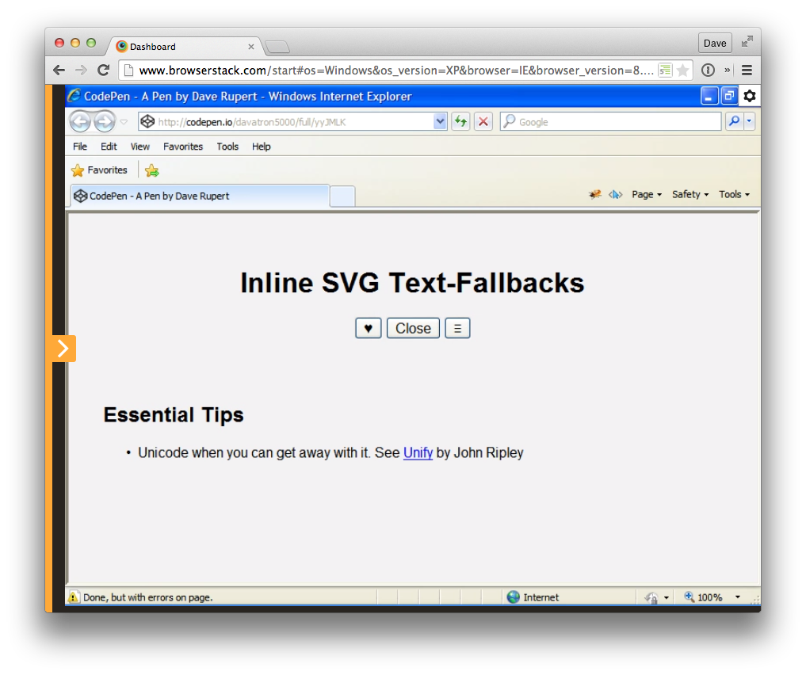

<div class="buttons">
<button aria-label="Like">
<span class="inline-svg" data-xlink="#icon-heart">♥</span>
</button>
<button aria-label="Close">
<span class="inline-svg" data-xlink="#icon-close">Close</span>
</button>
<button aria-label="Menu">
<span class="inline-svg" data-xlink="#icon-hamburger">≡</span>
</button>
<p><a href="#">Do you <span class="inline-svg" data-xlink="#icon-heart" title="like">♥</span> me?</a></p>
<button aria-label="Like">
<span class="inline-svg" data-xlink="#icon-heart">♥</span> Like
</button>
</div>Most inline SVGs don't need fallbacks, they're icon candy paired with assistive text and/or they are decorative (like icon-fonts). This aims at progressively enhancing critical fallbacks when absolutely necessary. So, we take a span, with a little extra meta and replace it with an SVG <use> element when it appears enhanceable.
How it looks in IE8

I try to scope the Image Replacement (IR) to either text or unicode. There are 5 examples here:
button with a Unicode "BLACK HEART SUIT" (♥) fallback. This heart is generally supported. Added an aria-label on the button to avoid screenreaders stumbling on wonky Unicode. VoiceOver failed on reading SVG title attributes in a button.title attribute here actually improved the accessibility for both SVG and fallback span.aria-label to parent button elements.title attributes otherwise.some.svg#icon-hamburger), you might be able to save legacy browsers the double download.SVGs from Geomicons